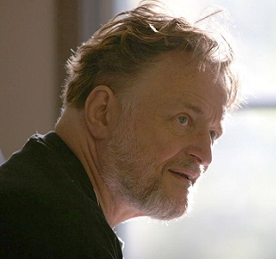

Происхождение
|  |
Джон Конвей, английский математик, заинтересовался проблемой, предложенной в 1940-х годах известным математиком Джоном фон Нейманом, который пытался создать гипотетическую машину, которая может воспроизводить сама себя. Джону фон Нейману удалось создать математическую модель такой машины с очень сложными правилами. Конвей попытался упростить идеи, предложенные Нейманом, и в конце концов ему удалось создать правила, которые стали правилами игры «Жизнь». Впервые описание этой игры было опубликовано в октябрьском (1970 год) выпуске журнала Scientific American, в рубрике «Математические игры» Мартина Гарднера. |
Дальнейшее развитие
|
Вскоре после публикации правил, было обнаружено несколько интересных шаблонов (вариантов расстановки живых клеток в первом поколении), в частности: r-пентамино и планер (глайдер). Некоторые такие фигуры остаются неизменными во всех последующих поколениях, состояние других периодически повторяется, в некоторых случаях со смещением всей фигуры. Существует фигура (крепкий орешек) всего из семи живых клеток, потомки которой существуют в течение 130 поколений, а затем исчезают. Конвей первоначально предположил, что никакая начальная комбинация не может привести к неограниченному размножению и предложил премию в 50 долларов тому, кто докажет или опровергнет эту гипотезу. Приз был получен группой из Массачусетского технологического института, придумавшей неподвижную повторяющуюся фигуру, которая периодически создавала движущиеся «планеры». Таким образом, количество живых клеток могло расти неограниченно. Затем были найдены движущиеся фигуры, оставляющие за собой «мусор» из других фигур. |
|
Классификация фигур
Модификации